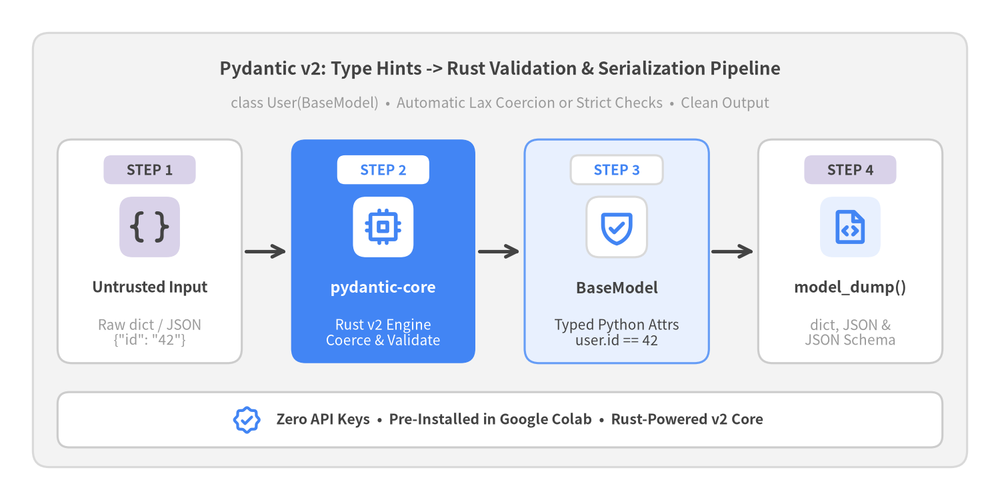
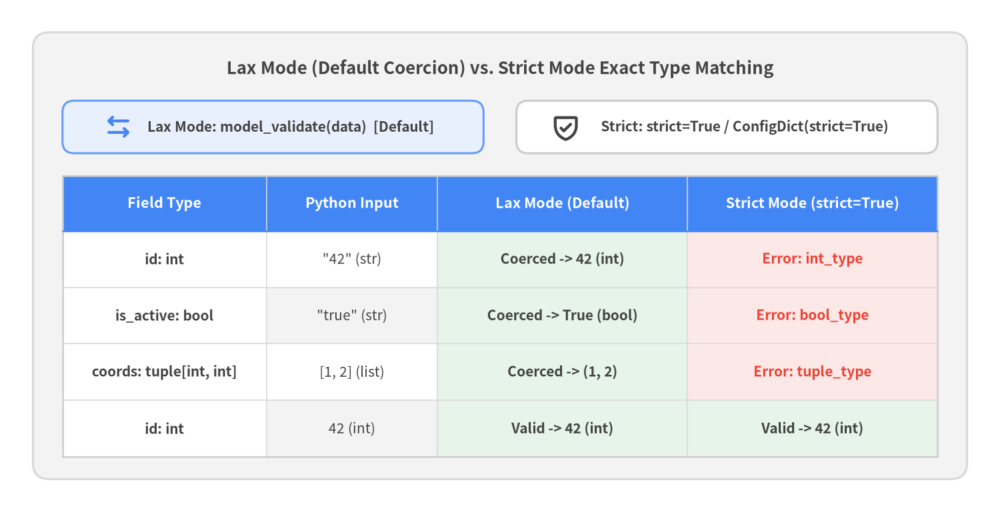

01. BaseModel Essentials & Type Coercion (Lax vs. Strict)
Pydantic v2 turns standard Python type annotations (class User(BaseModel):) into a blazing-fast, Rust-powered validation and serialization pipeline backed by pydantic-core. Because pydantic v2 comes pre-installed in Google Colab and requires zero API keys or external services, you can run every cell in this cookbook immediately out of the box.

View Drawlib Python Code
from drawlib.canvas import save, setup
from drawlib.icons import phosphor
from drawlib.lines import line
from drawlib.shapes import rectangle
from drawlib.styles import Colors, Styles
from drawlib.text import text
setup(width=152, height=76, dpi=150)
# Outer calm frame (50%+ neutral baseline)
rectangle(
(76.0, 38.0),
width=142.0,
height=66.0,
style=Styles.Neutral.patch(shape_r=2.5, shape_fill_color=Colors.Light, shape_line_color=Colors.Gray3),
)
# Header title & subtitle
text(
(76.0, 65.5),
"Pydantic v2: Type Hints -> Rust Validation & Serialization Pipeline",
style=Styles.DarkBold.patch(text_size=12.6),
)
text(
(76.0, 60.3),
"class User(BaseModel) • Automatic Lax Coercion or Strict Checks • Clean Output",
style=Styles.Muted.patch(text_size=10.2),
)
# 4 horizontal stage cards: width=28.0, gap=7.5 (x spans 8.75..143.25)
card_w = 28.0
card_h = 34.0
cy = 37.8
cxs = [22.75, 58.25, 93.75, 129.25]
neutral_card = Styles.White.patch(shape_r=2.2, shape_line_color=Colors.Gray4)
soft_card = Styles.PrimaryNeutral.patch(shape_r=2.2)
hero_card = Styles.PrimaryFlat.patch(shape_r=2.2)
# Stage 1: Untrusted Input (dict / JSON string)
rectangle((cxs[0], cy), width=card_w, height=card_h, style=neutral_card)
rectangle((cxs[0], 50.2), width=14.0, height=4.4, style=Styles.SecondaryNeutral.patch(shape_r=1.2, shape_line_width=0))
text((cxs[0], 50.2), "STEP 1", style=Styles.DarkBold.patch(text_size=10.0))
rectangle((cxs[0], 41.5), width=9.2, height=9.2, style=Styles.SecondaryNeutral.patch(shape_r=2.0, shape_line_width=0))
phosphor.brackets_curly((cxs[0], 41.5), width=6.0, style=Styles.DarkBold)
text((cxs[0], 32.3), "Untrusted Input", style=Styles.DarkBold.patch(text_size=10.8))
text((cxs[0], 25.5), 'Raw dict / JSON\n{"id": "42"}', style=Styles.Muted.patch(text_size=10.0))
# Stage 2: pydantic-core Engine (Focal PrimaryFlat Hero Card)
rectangle((cxs[1], cy), width=card_w, height=card_h, style=hero_card)
rectangle((cxs[1], 50.2), width=14.0, height=4.4, style=Styles.White.patch(shape_r=1.2, shape_line_width=0))
text((cxs[1], 50.2), "STEP 2", style=Styles.PrimaryBold.patch(text_size=10.0))
rectangle((cxs[1], 41.5), width=9.2, height=9.2, style=Styles.White.patch(shape_r=2.0, shape_line_width=0))
phosphor.cpu((cxs[1], 41.5), width=6.0, style=Styles.PrimaryBold)
text((cxs[1], 32.3), "pydantic-core", style=Styles.WhiteBold.patch(text_size=11.2))
text((cxs[1], 25.5), "Rust v2 Engine\nCoerce & Validate", style=Styles.White.patch(text_size=10.0))
# Stage 3: Validated BaseModel (Typed Python Attributes)
rectangle((cxs[2], cy), width=card_w, height=card_h, style=soft_card)
rectangle((cxs[2], 50.2), width=14.0, height=4.4, style=Styles.White.patch(shape_r=1.2, shape_line_color=Colors.Gray3))
text((cxs[2], 50.2), "STEP 3", style=Styles.PrimaryBold.patch(text_size=10.0))
rectangle((cxs[2], 41.5), width=9.2, height=9.2, style=Styles.White.patch(shape_r=2.0, shape_line_color=Colors.Gray3))
phosphor.shield_check((cxs[2], 41.5), width=6.0, style=Styles.PrimaryBold)
text((cxs[2], 32.3), "BaseModel", style=Styles.DarkBold.patch(text_size=11.0))
text((cxs[2], 25.5), "Typed Python Attrs\nuser.id == 42", style=Styles.Dark.patch(text_size=10.0))
# Stage 4: model_dump() / JSON & JSON Schema
rectangle((cxs[3], cy), width=card_w, height=card_h, style=neutral_card)
rectangle((cxs[3], 50.2), width=14.0, height=4.4, style=Styles.SecondaryNeutral.patch(shape_r=1.2, shape_line_width=0))
text((cxs[3], 50.2), "STEP 4", style=Styles.DarkBold.patch(text_size=10.0))
rectangle((cxs[3], 41.5), width=9.2, height=9.2, style=Styles.PrimaryNeutral.patch(shape_r=2.0, shape_line_width=0))
phosphor.file_code((cxs[3], 41.5), width=6.0, style=Styles.PrimaryBold)
text((cxs[3], 32.3), "model_dump()", style=Styles.DarkBold.patch(text_size=11.0))
text((cxs[3], 25.5), "dict, JSON &\nJSON Schema", style=Styles.Muted.patch(text_size=10.0))
# Inter-stage orthogonal connectors (7.5-unit gap between card edges)
for idx in range(3):
x_start = cxs[idx] + card_w / 2.0 + 0.6
x_end = cxs[idx + 1] - card_w / 2.0 - 0.6
line((x_start, cy), (x_end, cy), arrow_head="->", style=Styles.DarkBold)
# Subtle bottom banner
rectangle(
(76.0, 12.2),
width=134.5,
height=8.4,
style=Styles.White.patch(shape_r=1.8, shape_line_color=Colors.Gray4),
)
phosphor.seal_check((37.5, 12.2), width=4.6, style=Styles.PrimaryBold)
text(
(79.0, 12.2),
"Zero API Keys • Pre-Installed in Google Colab • Rust-Powered v2 Core",
style=Styles.DarkBold.patch(text_size=10.2),
)
save()
1. Your First BaseModel & Automatic Lax Type Coercion
To define a schema in Pydantic v2, subclass BaseModel and declare fields using standard Python type hints (int, str, bool, list[str]). By default, Pydantic runs in Lax Mode: when URL query parameters, form inputs, or loosely typed payloads pass strings such as "42" or "true", pydantic-core automatically coerces compatible values into native Python types while guaranteeing runtime type safety:
!pip install -q pydantic
from pydantic import BaseModel
class User(BaseModel):
id: int
name: str
is_active: bool = True
tags: list[str] = []
user = User(id="42", name="Alice", is_active="true", tags=["admin", "colab"])
print(user)
print("type(user.id):", type(user.id), "| is_active:", user.is_active)
print("model_dump():", user.model_dump())
id=42 name='Alice' is_active=True tags=['admin', 'colab']
type(user.id): <class 'int'> | is_active: True
model_dump(): {'id': 42, 'name': 'Alice', 'is_active': True, 'tags': ['admin', 'colab']}
Notice also how Pydantic v2 standardizes all validation and serialization methods under the model_* prefix—replacing deprecated v1 names (parse_obj, parse_raw, dict, and json):
Model.model_validate(obj)(v1:parse_obj): Validates a Pythondictor object into a typedBaseModelinstance.Model.model_validate_json(data)(v1:parse_raw): Parses and validates raw UTF-8 JSON strings orbytesdirectly in Rust (jiter) in a single pass—skipping Python'sjson.loads()overhead.instance.model_dump()/instance.model_dump_json()(v1:dict()/json()): Serializes the validated model back into a Pythondictor formatted JSON string.
raw_json = '{"id": "108", "name": "Bob", "tags": ["data", "rust"]}'
bob = User.model_validate_json(raw_json)
print("Validated from JSON:", bob)
print(bob.model_dump_json(indent=2))
Validated from JSON: id=108 name='Bob' is_active=True tags=['data', 'rust']
{
"id": 108,
"name": "Bob",
"is_active": true,
"tags": [
"data",
"rust"
]
}
2. Lax Mode vs. Strict Mode (ConfigDict(strict=True))
While automatic coercion in Lax Mode is ideal at application boundaries (HTTP query strings, environment variables, CSV imports), internal service-to-service APIs and financial pipelines often want to reject mismatched wire types instead of silently converting "42" to 42.
Pydantic v2 lets you switch to Strict Mode either per validation call (strict=True) or across an entire model (model_config = ConfigDict(strict=True)):
- Lax Mode (Default): Converts lossless/unambiguous inputs (
"42"→42,"true"→True,[1, 2]→(1, 2)), while still rejecting unparseable inputs like"forty-two". - Strict Mode (
strict=True): Requires exact type identity in Python ("42"failsintwithint_type,"true"failsboolwithbool_type, and[1, 2]failstuple[int, int]withtuple_typewhen validating Python dicts).

View Drawlib Python Code
from drawlib.canvas import save, setup
from drawlib.icons import phosphor
from drawlib.shapes import rectangle
from drawlib.smartarts import Table
from drawlib.styles import Colors, Styles
from drawlib.text import text
setup(width=152, height=78, dpi=150)
# Outer calm frame (50%+ neutral baseline)
rectangle(
(76.0, 39.0),
width=142.0,
height=68.0,
style=Styles.Neutral.patch(shape_r=2.5, shape_fill_color=Colors.Light, shape_line_color=Colors.Gray3),
)
# Header title
text(
(76.0, 67.5),
"Lax Mode (Default Coercion) vs. Strict Mode Exact Type Matching",
style=Styles.DarkBold.patch(text_size=12.4),
)
# Mode summary callout pills aligned to table width (x = 9.5..142.5)
rectangle((41.5, 58.6), width=64.0, height=8.0, style=Styles.PrimaryNeutral.patch(shape_r=1.8))
phosphor.arrows_left_right((18.0, 58.6), width=4.5, style=Styles.PrimaryBold)
text((44.2, 58.6), "Lax Mode: model_validate(data) [Default]", style=Styles.DarkBold.patch(text_size=10.0))
rectangle((110.5, 58.6), width=64.0, height=8.0, style=Styles.White.patch(shape_r=1.8, shape_line_color=Colors.Gray4))
phosphor.shield_check((86.0, 58.6), width=4.5, style=Styles.DarkBold)
text((113.2, 58.6), "Strict: strict=True / ConfigDict(strict=True)", style=Styles.DarkBold.patch(text_size=10.0))
# Comparison Table (Top-Left anchored at xy=(9.5, 51.2), total width=133.0, total height=42.8)
table = Table(
cell_style=Styles.White,
text_style=Styles.Dark.patch(text_size=10.0),
header_cell_style=Styles.PrimaryFlat,
header_text_style=Styles.WhiteBold.patch(text_size=10.4),
border_style=Styles.MutedThin,
)
table.set_style_cell_evenodd(
even_color=Colors.Light,
even_text_style=Styles.Dark.patch(text_size=10.0),
odd_color=Colors.White,
odd_text_style=Styles.Dark.patch(text_size=10.0),
)
table.set_style_cell(
background_color=Colors.White,
text_style=Styles.DarkBold.patch(text_size=10.0),
rows=[1, 2, 3, 4],
columns=[0],
)
table.set_style_cell(
background_color=Colors.SuccessNeutral,
text_style=Styles.DarkBold.patch(text_size=10.0),
rows=[1, 2, 3, 4],
columns=[2],
)
table.set_style_cell(
background_color=Colors.DangerNeutral,
text_style=Styles.DangerBold.patch(text_size=10.0),
rows=[1, 2, 3],
columns=[3],
)
table.set_style_cell(
background_color=Colors.SuccessNeutral,
text_style=Styles.DarkBold.patch(text_size=10.0),
rows=[4],
columns=[3],
)
# Re-apply header last so row 0 keeps its Primary focal header bar
table.set_style_cell_header(
background_color=Colors.Primary,
text_style=Styles.WhiteBold.patch(text_size=10.4),
)
table.set_style_border(
top=Styles.Primary.patch(line_color=Colors.Gray4, line_width=1.2),
top2=Styles.Primary.patch(line_color=Colors.Primary, line_width=1.2),
bottom=Styles.Primary.patch(line_color=Colors.Gray4, line_width=1.2),
left=Styles.Primary.patch(line_color=Colors.Gray4, line_width=1.2),
right=Styles.Primary.patch(line_color=Colors.Gray4, line_width=1.2),
between_columns=Styles.Primary.patch(line_color=Colors.Gray3, line_width=0.8),
between_rows=Styles.Primary.patch(line_color=Colors.Gray3, line_width=0.8),
)
comparison_data = [
["Field Type", "Python Input", "Lax Mode (Default)", "Strict Mode (strict=True)"],
["id: int", '"42" (str)', "Coerced -> 42 (int)", "Error: int_type"],
["is_active: bool", '"true" (str)', "Coerced -> True (bool)", "Error: bool_type"],
["coords: tuple[int, int]", "[1, 2] (list)", "Coerced -> (1, 2)", "Error: tuple_type"],
["id: int", "42 (int)", "Valid -> 42 (int)", "Valid -> 42 (int)"],
]
table.draw_flexible(
xy=(9.5, 51.2),
column_widths=[31.0, 26.0, 38.0, 38.0],
row_heights=[8.4, 8.6, 8.6, 8.6, 8.6],
data=comparison_data,
align="top_left",
)
save()
Let's compare Lax vs. Strict validation side-by-side on our User model—first passing strict=True to User.model_validate(...), and then locking strictness onto a dedicated model class via ConfigDict(strict=True):
from pydantic import ConfigDict, ValidationError
payload = {"id": "42", "name": "Alice"}
# 1. Default Lax Mode: coerces "42" -> 42
lax_user = User.model_validate(payload)
print("Lax mode succeeded:", repr(lax_user))
# 2. Per-call Strict Mode: rejects string "42" for int field
try:
User.model_validate(payload, strict=True)
except ValidationError as e:
print("\nStrict mode raised ValidationError:")
print(e)
# 3. Model-wide Strict Mode via ConfigDict(strict=True)
class StrictPoint(BaseModel):
model_config = ConfigDict(strict=True)
label: str
coords: tuple[int, int]
point = StrictPoint(label="origin", coords=(0, 0))
print("\nStrictPoint exact match:", repr(point))
Lax mode succeeded: User(id=42, name='Alice', is_active=True, tags=[])
Strict mode raised ValidationError:
1 validation error for User
id
Input should be a valid integer [type=int_type, input_value='42', input_type=str]
For further information visit https://errors.pydantic.dev/2.14/v/int_type
StrictPoint exact match: StrictPoint(label='origin', coords=(0, 0))
Notice how pydantic-core pinpoints the exact offending field (id), human-readable message (Input should be a valid integer), error code (type=int_type), and raw input_value='42'—and when you parse JSON via StrictPoint.model_validate_json('{"label": "origin", "coords": [0, 0]}'), Strict Mode still accepts JSON arrays for tuple fields because JSON has no native tuple literal.
Key Takeaways & Next Step
BaseModel+ v2model_*API: Declare fields with standard Python type hints, validate dicts or raw JSON strings at Rust speed viamodel_validate()/model_validate_json(), and serialize cleanly withmodel_dump()/model_dump_json().- Up Next in Chapter 02: Learn how to attach declarative numeric, string, and safe factory defaults with
Field(...)and programmatically inspect structured multi-fieldValidationErrorpayloads (e.errors()).